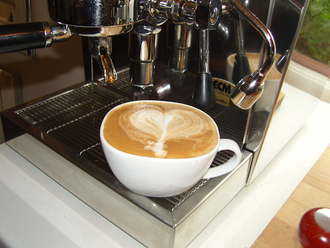

Flat white with latte.

A flat white will be served many different ways and often resembles a latte.
The aim of a flat white is generally to serve an espresso based drink, with un-texturised milk.
This is milk that has not had air incorporated into it while being stretched.
So will in most cases be espresso and steamed milk, little or no froth.